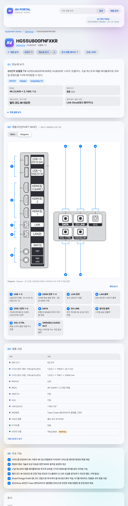
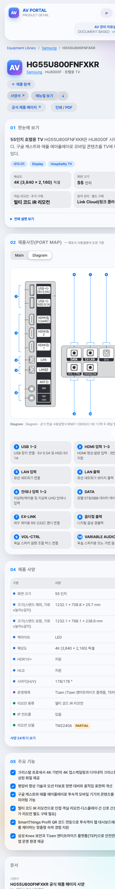

대표 hg55u800fnfxkr의 760px 상세와 390px 모바일 비교. 여섯 크기 모두 같은 후면 도면 SHA-256 af8c14cbb0c14bf888c135d153cf9fac500bc2fdcd9eca45740527be7c4f014b 사용.
af8c14cbb0c14bf888c135d153cf9fac500bc2fdcd9eca45740527be7c4f014b
상단 6–8번은 단자판 위, 하단 9–10번은 단자판과 인쇄 라벨 아래에 배치.

